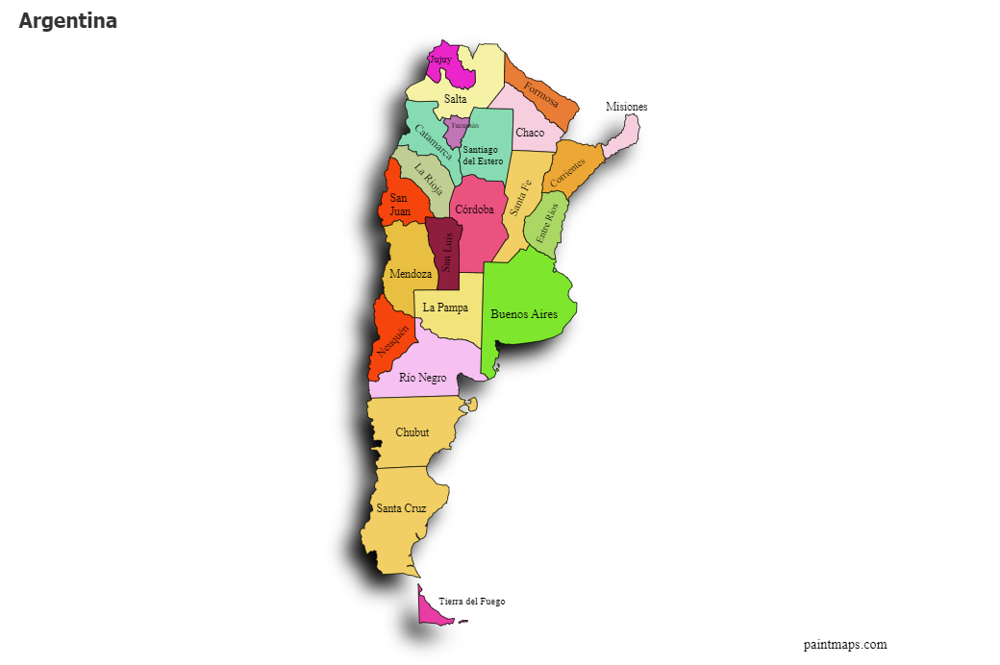
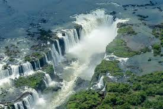
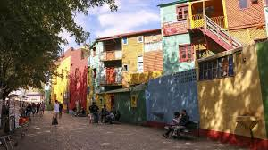

Arjantin
Başkent: Buenos Aires
Yüzölçümü: 2.780.400 km²
Nüfus: Yaklaşık 45 milyon
Para Birimi: Arjantin Pesosu (ARS)
Arjantin, Güney Amerika'nın güneyinde yer alan büyük bir ülkedir. Zengin kültürel mirası, etkileyici doğal güzellikleri ve dünyaca ünlü tango dansı ile tanınır. Dünyanın en büyük şarap üreticilerinden biri olup, geleneksel mutfağı ile de ünlüdür. Patagonya bölgesi ve Iguazu Şelaleleri gibi doğal harikaları keşfetmek için ziyaretçilere pek çok seçenek sunar.

İklim ve Coğrafya
İklim: Arjantin, farklı iklim tiplerine sahip büyük bir ülkedir. Kuzeyde tropikal iklim hakimken, güneyde soğuk ve karasal iklim görülür. Bu çeşitlilik, ülkenin her bölgesine özgü farklı bitki örtüsü ve hayvan çeşitliliği sağlar. Buenos Aires ve çevresi ılıman iklime sahiptir. Patagonya'da ise kışlar sert ve soğuk geçer.
Coğrafya: Arjantin, güneydeki Patagonya'dan kuzeydeki tropikal bölgelere kadar uzanan geniş bir coğrafyaya sahiptir. Ülke, And Dağları'ndan Atlas Okyanusu'na kadar farklı doğal zenginliklere sahiptir. Arjantin'in en ünlü coğrafi özelliklerinden biri Iguazu Şelaleleri'dir. Ülke, çok sayıda göl, nehir ve dağ ile çeşitlenen doğal manzaralara sahiptir.
Tarihi Gelişmeler
İspanyol Kolonisi (1516-1816): Arjantin, 16. yüzyılda İspanyol İmparatorluğu'nun sömürgesi haline gelmiştir. Buenos Aires, 1580'de kurularak bölgenin önemli bir ticaret merkezi haline gelmiştir.
Bağımsızlık (1816): Arjantin, 9 Temmuz 1816'da Tucumán'da bağımsızlık ilan etmiştir. Bağımsızlık mücadelesi, Simon Bolívar ve José de San Martín gibi liderlerin öncülüğünde verilmiştir.
İç Savaşlar (1816-1862): Bağımsızlık sonrası, Arjantin'de eyaletler arasında bir dizi iç savaş yaşanmış ve bu savaşlar 1862'de ülkenin birleşmesiyle sona ermiştir.
20. Yüzyıl ve Ekonomik Krizler: 20. yüzyılda Arjantin, ekonomik dalgalanmalara, askeri darbeler ve diktatörlük yönetimlerine tanıklık etmiştir. 1980'lerdeki ekonomik kriz ve 2001 yılında yaşanan büyük ekonomik çöküş, ülkenin tarihindeki önemli dönüm noktalarındandır.
Demokratikleşme (1983): Arjantin, 1983 yılında askeri diktatörlükten demokrasiye geçmiştir ve sonrasındaki yıllarda ekonomik istikrar sağlanmaya çalışılmıştır.
Tango:
Tango, Arjantin’in dünya çapında bilinen en önemli kültürel simgelerinden biridir. 19. yüzyılın sonlarında Buenos Aires'in kenar mahallelerinde doğan bu duygusal dans, zamanla tüm dünyada tanınmış ve UNESCO Somut Olmayan Kültürel Miras listesine dahil edilmiştir. Tango dansı, tutku ve zarafeti yansıtırken, tango müziği ise melankolik tınılarıyla dikkat çeker.
Mate:
Mate çayı, Arjantinlilerin sosyal yaşamında çok önemli bir yere sahiptir. Termosla sıcak su taşıyarak gün boyu tüketilen bu içecek, kalabalık ortamlarda elden ele dolaşır. Bu gelenek sadece bir içecek paylaşımı değil, aynı zamanda dostluğun ve samimiyetin göstergesidir.
Asado:
Asado, Arjantin'e özgü bir barbekü geleneğidir. Etin odun ateşinde yavaş yavaş pişirildiği bu etkinlik, genellikle hafta sonları aile bireylerini ve dostları bir araya getirir. Asado, yemek yemenin ötesinde sosyalleşme ve paylaşım anıdır.

İguazu Şelaleleri - Arjantin
İguazu Şelaleleri, Arjantin ile Brezilya arasındaki sınırda yer alan, dünyanın en büyük ve en etkileyici şelalelerinden biridir. 2.7 kilometre uzunluğundaki bu şelale zinciri, 275'ten fazla düşüşten oluşur ve her biri farklı büyüklükte ve güçtedir. İguazu, UNESCO Dünya Mirası Listesi'nde yer almakta olup, bölgedeki milli parklar, zengin flora ve faunasıyla doğa severler için bir cennettir.

La Boca Mahallesi - Arjantin
La Boca Mahallesi, Arjantin'in başkenti Buenos Aires'te yer alan tarihi bir semttir ve renkli evleri, dar sokakları ve canlı atmosferi ile ünlüdür. Bu semt, Arjantin futbolunun kalbinin attığı yerlerden biridir, çünkü Boca Juniors futbol kulübü burada kurulmuştur. La Boca, sanat galerileri, sokak sanatçıları ve tango gösterileriyle de tanınır. Ziyaretçilerine hem kültürel hem de görsel bir şölen sunar.

Perito Moreno Buzulu - Arjantin
Perito Moreno Buzulu, Arjantin'in Patagonya bölgesinde yer alan, dünyanın en büyük buzullarından biridir. Bu buzul, her yıl birkaç metre ilerleyerek göle doğru hareket eder ve zaman zaman buzulun kırılma sesiyle büyük bir gösteri sergiler. UNESCO Dünya Mirası Listesi'nde yer alan Perito Moreno, doğa severler ve macera tutkunları için eşsiz bir gezi rotasıdır. Ayrıca, buzulun etrafındaki milli park, zengin hayvan ve bitki örtüsüyle dikkat çeker.